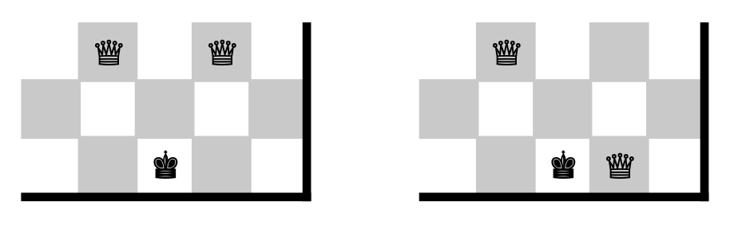

Stage 7 入力の棋譜を駒の動きに変換する
7-4 移動元のマスのヒントを整理する
動かす駒の次に現れる可能性があるのが移動元の file もしくは rank を表す英数字です。基本は両方とも書いてませんし、あってもどちらか一方です。ということで、「ない方が自然、あった場合に備える」というスタンスで解読していきます。
# written info of what rank the piece comes from; frRANK starts from 0, but written No. is from 1
if line[0].isdecimal():
frFILE = OVERSIZE
frRANK = IO.ToggleType(line[0]) - 1
# deleting the number so that the sentence seems simpler
line = line.lstrip(line[0])
# written info of what file the piece comes from; frFILE starts from 0, but written No. is from 1
elif ord('a') <= ord(line[0]) <= ord('h') and ord('a') <= ord(line[1]) <= ord('x'):
frFILE = IO.ToggleType(line[0]) - 1
frRANK = OVERSIZE
# deleting only the first character of line
line = line[1:]
# nothing is written about where the piece comes from
else:
frFILE = OVERSIZE
frRANK = OVERSIZE
logger.info('FR = {}, {}'.format(frFILE, frRANK))
file や rank が指定されていればそれぞれ frFILE, frRANK の各変数に格納しますが、指定がなければ共に OVERSIZE が入ります。

どして？
できれば frFILE にも frRANK にも具体的な値を入れたいのですが、棋譜に値が書いていない以上それができないじゃないですか。でも「書いていない」ってどうやって表します？
盤上にない値を使えば書いてないってことをあらわせるんか
その通りです。
~~~~~~~~~~~~~~~
まずは面倒の少ない rank の場合から。7-3 の処理ですでに駒を表す文字については削除されていますから、移動元の rank について指定があるときは line の先頭が数字です。
ホントに？お？ホントか？
そんなに疑うならみてみましょうか。まずテキトーに 7-2 の正規表現に適合する棋譜を考えます。
Q5xh6 とかにしてみよか
7-3 で駒の種類を表す文字を削除していますよね。
5xh6 になったな
もし最初に考えた棋譜が移動元の rank を指定するものだったら、数字が先頭にきてるはずですよ。そうでなければ先頭は小文字のアルファベットですね。
ホントだ
~~~~~~~~~~~~~~~
そこで line[0] について「数字かどうか」isdecimal を実行し、True であればそこで指定されている rank 番号を frRANK に格納します。
# written info of what rank the piece comes from; frRANK starts from 0, but written No. is from 1
if line[0].isdecimal():
frFILE = OVERSIZE
frRANK = IO.ToggleType(line[0]) - 1
# deleting the number so that the sentence seems simpler
line = line.lstrip(line[0])
ToggleType の変換機能では、入力された数字をそのまま int にする以上に仕事しません。frRANK はインデックスとして使うので、-1 して 0 スタートにするのを忘れないこと。また file は指定なしですから、規定値は OVERSIZE です。
~~~~~~~~~~~~~~~
最後に line を簡略化するために今解読した先頭文字を消去しておきます。
# written info of what file the piece comes from; frFILE starts from 0, but written No. is from 1
if line[0].isdecimal():
frFILE = OVERSIZE
frRANK = IO.ToggleType(line[0]) - 1
# deleting the number so that the sentence seems simpler
line = line.lstrip(line[0])
直後に同じ文字が出現することはない(駒をとったことを表す "x" もしくは file を表すアルファベットが数字に先行)ため、lstrip をつかいます。
先頭に数字が 2 つ連続で並ばないから「何文字も消える」ってことがないわけな
~~~~~~~~~~~~~~~
次は file が指定されている場合です。file 指定のときは直後にもう一度アルファベットが続きます。

ホントに？
これもしっかり検証してみましょう。適当に棋譜を考えて 7-2 の正規表現、7-3 で考えた先頭の大文字の消去、先ほど実装した先頭の数字の消去を潜らせます。
Bcxd4 → cxd4
移動元の file をしていた場合は先頭に小文字のアルファベットが２文字以上並んでますよね。しかもその２文字は
- 1 文字目が a-h
- 2 文字目が a-x
という組み合わせになっているはずです。
ホントだ
ですから、これを条件として移動元の file が指定されているか判断します。
~~~~~~~~~~~~~~~
コードをみてみましょう。先ほどの条件でまずは if (elif) 文を作ります。
# written info of what file the piece comes from; frFILE starts from 0, but written No. is from 1
elif ord('a') <= ord(line[0]) <= ord('h') and ord('a') <= ord(line[1]) <= ord('x'):
frFILE = IO.ToggleType(line[0]) - 1
frRANK = OVERSIZE
# deleting only the first character of line
line = line[1:]
条件文中でやることは rank 指定の時とほぼ変わりません。frFILE に ToggleType を使って指定 file 番号を 0 スタートで格納し、frRANK には指定なし OVERSIZE を入れておきます。
# written info of what file the piece comes from; frFILE starts from 0, but written No. is from 1
elif ord('a') <= ord(line[0]) <= ord('h') and ord('a') <= ord(line[1]) <= ord('x'):
frFILE = IO.ToggleType(line[0]) - 1
frRANK = OVERSIZE
# deleting only the first character of line
line = line[1:]
ここからが問題。file 指定の場合、先ほども申し上げた通り 1 文字目と 2 文字目にアルファベットが連続します。そして時には同じ文字が連続することもあります。
そんなことあんの
ありますよ。例えば Qgg1 とか。

Qgg1 → gg1
ホントだ
もし同じ文字が連続しているときに「先頭と違う文字が出るまで削除し続ける」lstrip を発動すると、移動先の file を示す 2 文字目のアルファベットまで消失してしまいます。ですからここでは「line の 2 文字目以降を line に再代入」
frFILE = IO.ToggleType(line[0]) - 1
frRANK = OVERSIZE
# deleting only the first character of line
line = line[1:]
しているのです。
rank の時もそうすりゃよかったじゃん
まあそれを言われればおしまいですけど。
~~~~~~~~~~~~~~~
file も rank も指定されていない「その他」の場合は frFILE, frRANK 共に OVERSIZE です。
# nothing is written about where the piece comes from
else:
frFILE = OVERSIZE
frRANK = OVERSIZE
logger.info('FR = {}, {}'.format(frFILE, frRANK))
繰り返しになりますが、ふつう両方とも OVERSIZE になります。
~~~~~~~~~~~~~~~
次いで「相手の駒をとっているか」を判読します。ここまで来れば line から移動元の情報は全て削除され "x" が line 先頭まで来ていますから、line[0] == "x" によって場合分けが可能です。
# whether the piece has captured one of the opponent's pieces
if line[0] == 'x':
CAPTURED = True
line = line.lstrip(line[0])
else:
CAPTURED = False
駒をとっていれば新たな変数 CAPTURED を True に、そうでなければ False にします。この後のために x は lstrip で消しておきましょう。